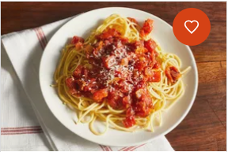

Spaghetti

Description
This is a beautifully prepared spaghetti with love from Nigeria.
Ingredients
- 1/4 cup olive oil
- 1 onion, chopped
- 1/2 teaspoon garlic powder
- 4 pounds fresh tomatoes, peeled and chopped
- 1 tablespoon white sugar
- 1 tablespoon dried basil
- 1 tablespoon dried parsley
- 1 teaspoon salt
Steps
- Heat olive oil in a large skillet over medium heat.
Add onion and garlic powder; cook and stir until onion
is translucent, about 5 minutes.
- Add tomatoes, sugar, basil, parsley, and salt; bring to a boil.
- Reduce heat and simmer, stirring occasionally,
until sauce thickens, 1 to 2 hours.
- Serve hot and enjoy!